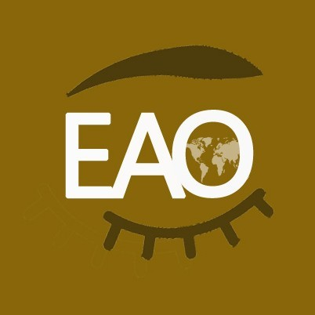

收录于合集
以下文章来源于欧亚新观察 ，作者金伯利·马滕
 欧亚新观察 .
“欧亚新观察”追踪欧亚地区最新动态，汇总权威数据，深度报道重要事件，专业解析热点新闻，是兼具新闻性、学术性和智库特点的新媒体平台。

芬兰或快速加入北约，俄罗斯是忍是打？
**
**
导读
当地时间5月12日，芬兰总统尼尼斯托（Sauli Niinisto）和总理马林（Sanna Marin）在一份联合声明中表态称，他们认为，芬兰申请加入北约“刻不容缓”。“我们希望，做出这一决定（加入北约）所需的程序，将在未来几天内迅速落实”。在芬兰政府即将把加入北约的草案提交至芬兰议会进行审批之际，芬兰、瑞典及土耳其外长5月14日在柏林举行会谈，试图解决芬兰和瑞典计划加入北约引起的分歧，芬兰及瑞典表示，尽量消除误解，有信心达成解决方案。另外，俄罗斯总统普京5月14日与芬兰总统尼尼斯托通电话。 普京表示，芬兰放弃中立国地位加入北约，将会是个错误。
对此，巴纳德学院、哥伦比亚大学哈里曼研究所教授金伯利·马滕在美国Foreign Affairs网站刊文，对芬兰加入北约的前景及俄罗斯可能的反应进行了分析。本文认为，俄乌冲突使得芬兰的舆论发生极大变化，绝大多数的芬兰公众和主要政党现在都支持加入北约，北约也可以很容易地为芬兰和瑞典建立一个快速加入程序，时间可能将被压缩到一个月。但显然克里姆林宫将运用各种方式向芬兰施压，对芬兰发动直接军事攻击似乎不太可能，但或许将采取某种网络或情报行动。作者强调，对俄罗斯来说，芬兰加入北约并不是一个新的重大威胁，芬兰早就长期与北约的合作密切。 未来普京的反应具有不可预测性，而对芬兰来说，待在北约里面可能比待在外面更安全。 欧亚系统科学研究会特转发本文，供读者思考。文章由“欧亚新观察”翻译，原题为Finland’s New Frontier，仅代表作者本人观点。
▲ 北约秘书长斯托尔滕贝格（中）于2022年1月24日在布鲁塞尔的北约总部与芬兰外交部长哈维斯托（左）和瑞典外交部林德（右）参加媒体会议。图源：美联社
俄乌冲突破坏了欧洲维系30年的冷战后秩序。 其最重要和最出乎意料的地缘政治影响是，长期以来作为不结盟国家的芬兰，可能很快就会加入北约，与其类似的不结盟邻国瑞典或将紧随其后。 芬兰与俄罗斯有830英里的边界，芬兰首都赫尔辛基离普京的家乡圣彼得堡要比离斯德哥尔摩更近。一个包括芬兰在内的北约将使该联盟与俄罗斯的陆地边界增加一倍以上。
对芬兰来说，这种对俄罗斯的恐惧并不新鲜。这个国家在1917年获得独立之前，曾在俄罗斯帝国的统治下度过了一个世纪。苏芬战争之后，芬兰失去了其东南部的一大块领土，然后在冷战时期的所谓芬兰化政策下失去了自主权。在那几十年里，芬兰人从事自我审查并致力于亲苏联的外交政策，以换取不被莫斯科占领。 苏联解体后，芬兰 （和瑞典一样） 于1995年加入欧盟，明确了其西方身份。 与欧盟其他国家一起，赫尔辛基还批准了2007年的《里斯本条约》，该条约承诺每个成员都要援助和协助任何面临外部军事攻击的其他国家。
从2014年开始，克里米亚入俄之后，俄罗斯又开始威胁芬兰，在许多方面对待赫尔辛基与附近的北约国家没有什么不同。莫斯科多次闯入芬兰领空，并两次干扰在国际水域作业的芬兰科研船只。然而， 芬兰在形式上仍然保持着不结盟，公众害怕与这个强大的邻国对立 。就在2021年秋天，只有不到三分之一的芬兰人支持加入北约，这种态度已经持续了几十年。芬兰人反而更愿意充当俄罗斯和西方之间的经济和外交桥梁。事实上，芬兰国家元首绍利·尼尼斯托（Sauli Niinistö）总统对普京非常了解，甚至和他一起打过冰球，长期以来一直被视为欧洲和俄罗斯之间的“翻译官”。虽然芬兰与俄罗斯的双边贸易关系受到疫情的严重影响（如今已经被欧盟的制裁彻底颠覆），但此前两国的贸易额经常超过100亿美元，使莫斯科成为赫尔辛基的五大贸易伙伴之一。到2019年，超过900家芬兰企业在俄罗斯投资。
俄乌冲突迅速改变了芬兰的舆论。有史以来第一次，绝大多数的芬兰公众和芬兰的大多数主要政党现在都支持加入北约 ，而且芬兰很可能在6月29日的马德里峰会之前申请加入北约，随后可能是瑞典，斯德哥尔摩将等待赫尔辛基首先采取行动。加入北约标志着赫尔辛基战略态势的历史性转变，它将使芬兰获得世界上最强大的军事联盟的集体安全保障，并得到美国核武器的支持。但它也可能进一步颠覆芬兰与俄罗斯的传统经济关系，使该国面临报复的风险。
01
位置，位置，位置
除了广泛的共同陆地边界之外，芬兰和俄罗斯还在芬兰湾比邻而居。 这个海湾连通波罗的海，在那里，军事化程度很高的俄罗斯飞地加里宁格勒是俄波罗的海舰队的所在地。北约主导着波罗的海东南岸，其成员包括德国、波兰和波罗的海国家爱沙尼亚、拉脱维亚和立陶宛。然而，加里宁格勒被夹在波兰和立陶宛之间，因此波罗的海西北岸的的芬兰和瑞典加入北约会产生重大的地缘政治影响。首先，它将使莫斯科在与西方国家发生战争时维持加里宁格勒的海上和空中通道的能力受到影响，因为连接该飞地和俄罗斯其他地区的走廊将被北约成员所包围。
获得对波罗的海周边地区的控制也将大大缓解北约在俄罗斯攻击时保卫其波罗的海成员国的压力。 自2014年克里米亚入俄以来，北约的战略规划人员一直担心这种情况，因为爱沙尼亚和拉脱维亚与俄罗斯接壤，并有大量的俄裔居民，因此这些国家有可能受到俄罗斯混合战的伤害。例如，可以想象，俄罗斯情报部队可以发起一场信息战运动，谎称当局迫害爱沙尼亚的俄罗斯族人，虚构当地人要求俄罗斯派遣保护性维和部队越过边界的信息。北约方面担心，俄罗斯可能利用加里宁格勒的军舰、飞机、无人机和导弹——其中一些能够携带核弹头——在通往爱沙尼亚和拉脱维亚的便捷海空通道展开拒止作战。此外，这些国家只能通过立陶宛和波兰之间的一小段边界，即所谓的Suwalki缺口，与北约的其他国家有陆路联系，该缺口一边是加里宁格勒，另一边是俄罗斯的盟友白俄罗斯，这使得战时北约的陆路通道同样充满风险。根据北约目前的兵力配置，战时参与波罗的海国家的防卫作战可能会带来高伤亡。
但芬兰和瑞典都与北约成员国挪威接壤，它们的加入将改变该地区的力量平衡。 芬兰与爱沙尼亚隔海相望，只有200多英里，并且已经在升级其防空系统。芬兰和爱沙尼亚还发起了一项商业倡议，用海湾下的高速列车隧道连接赫尔辛基和塔林，使它们成为一个单一的城市区域。据推测，这样的隧道也可以用于军事目的。
不过，对芬兰来说，加入北约也有风险，它将芬兰军队置于一个新的关键边界的前沿。 特别值得关注的是，莫斯科将对赫尔辛基加入北约的正式请求将作出怎样的反应——在芬兰申请加入和正式加入之间可能会有好几个月的间隔。在此期间，芬兰将不会受到北约第5条规定下集体安全的保护， 俄罗斯可能会试图威胁或攻击芬兰，希望芬兰的公众舆论会再次转向反对加入联盟，并使加入北约的进程短路。
02
匈牙利的讨价还价
北约的地理扩张并不是一个新现象。 在1949年《北大西洋公约》的第10条中，联盟的设计师们预见到，任何有能力的欧洲国家，只要认同北约的安全目标，都可以被邀请加入。随着北马其顿在2020年的加入，北约现在包括30个国家。其中14个是在冷战结束后加入的。在1995年的一份文件中，北约规定了对新成员的基本（如果相当模糊的话）要求，这些要求一直要经过政治谈判：对自由民主、法治和对军事力量的民主控制的承诺；能够为共同防御作出贡献的市场经济；以及解决所有悬而未决的民族和边界争端。这些要求是为正在进行西化改革的前华沙条约组织和其他东欧国家设计的，涉及一系列繁琐的程序和准备工作，最终为每个有志加入北约的国家制定一个独特而详细的"成员行动计划"。
芬兰于1919年建立了宪政民主制度，拥有发达的市场经济和高度精干的军队，轻松地满足了所有的成员标准，因而与最近吸纳的成员国不同。赫尔辛基的武装力量对北约来说也并不陌生。自1994年以来，芬兰参与了北约的和平伙伴关系计划，旨在通过与北约成员国军队的联合教育、培训和军事部署建立信任和互操作性。芬兰曾参与到北约在巴尔干地区、阿富汗和伊拉克的任务当中。它也是六个 “增强伙伴国 “之一，自克里米亚入俄以来，北约与之共享额外的资源和信息。这一年，北约与芬兰签订了东道国支持协议，允许该国在发生 “灾害、破坏和安全威胁 “时接受北约的帮助，并深化了芬兰对北约培训和演习的参与。自2017年以来，赫尔辛基还与北约在网络防御问题上进行了协调，并与北约和欧盟合作开设了一个应对混合威胁的中心。(虽然“混合威胁”的概念没有得到很好的定义，但它可以包括从信息战和政治影响行动到使用非国家武装行为者的一切，无论是否使用正规军事力量。)
由于这些原因， 北约可以很容易地为芬兰建立一个快速加入程序，可能将时间压缩到一个月。同样的情况也可能适用于瑞典 。事实上，北约各国外长在4月初的会议上讨论了这些潜在的新成员请求，其中包括瑞典和芬兰的外长，这表明这样一个进程可能已经开始。
尽管如此，芬兰加入北约的进程仍可能因北约30个成员国中每个国家的法律批准要求而被推迟。 在最近的批准案例中，北马其顿的批准过程花了近一年时间。虽然看起来所有北约成员国都希望芬兰加入，但一些分析家担心，匈牙利总理欧尔班可能会威胁减缓这一进程，以获得一些政治交换条件——可能不是来自北约本身，而是来自欧盟。作为一个以不断向俄罗斯示好而闻名的右翼民族主义者，欧尔班自2019年以来一直与赫尔辛基发生争执，当时芬兰担任欧盟轮值主席国，根据欧尔班在国内违反法治的情况，牵头就匈牙利是否应该削减其欧盟投票权进行听证（由欧盟议会授权）。现在，由于对匈牙利政府腐败和欧尔班反LGBTQ政策的指责，欧盟委员会威胁要扣留对布达佩斯的新冠支持资金。由于并非所有欧盟成员国都是北约成员，而且欧盟和北约的目的根本不同，欧尔班提出的任何将两者联系起来的要求都可能使芬兰加入北约的进程复杂化，并需要进行长期的外交周旋。
03
小心间隔期！
俄罗斯对芬兰发动直接军事攻击似乎不太可能。 根据未经证实的视频录像，莫斯科已经开始向芬兰边境部署更多的重型武器系统和导弹，以回应媒体关于芬兰可能申请加入北约的报道。但俄方很可能会对跨越这一边界三思而行。自2014年以来，拥有28万人的芬兰国防军已经进行了重整，以迅速应对俄罗斯式的混合战争。4月初，芬兰政府进一步授权一次性激增20亿美元的国防开支，比其通常的年度军事预算增加70%。预算侧重于边防和防空，增加预算的目的可能是为了使芬兰达到北约成员国将国内生产总值的2%用于国防的要求。随着俄罗斯军队在乌克兰陷入困境，莫斯科是否有能力再开辟一个战场也令人怀疑。
但克里姆林宫可以选择以其他方式向芬兰施压。 例如，它可能会尝试对赫尔辛基采取某种网络或情报行动，使芬兰公众反对北约。(2016年，当黑山准备加入北约时，黑山官员声称，俄罗斯情报人员曾试图策划一场针对那里的民选政府的政变，但未获成功）。4月初，芬兰政府网站迎来了与俄罗斯有关的拒绝服务攻击的高潮。目前，这些攻击已被迅速反制，而且似乎主要是象征性的，是一种记录莫斯科对芬兰内部有关加入北约的讨论的不满的方式。到目前为止，芬兰还没有受到困扰得罪俄罗斯的其他国家曾遭遇的勒索软件和对关键基础设施的网络攻击方面影响，但现在它也可能成为攻击目标。芬兰官员已经警告公众，可能会有政治影响和信息战活动，俄方也许会使用深度伪造视频技术来编造虐待居住在该国的数万名俄罗斯公民和有俄罗斯血统的芬兰公民的故事。
美国及北约成员国可以在芬兰加入北约的脆弱过渡期为其提供双边防务支持。 这种援助可能会集中在网络和防空方面，并将建立在双方长期的军事关系上。30年来，芬兰一直在购买美国的武器，就在俄乌冲突爆发前几周，芬美两国签署了一项90亿美元的协议，内容为购买64架先进的F-35战斗机。赫尔辛基还与英国有着密切的军事关系，包括其是英国联合远征部队的成员（与瑞典和六个目前的北约成员一起），该部队成立于2014年，用于在波罗的海地区进行快速危机反应。
与此同时，芬兰在抵御任何来自莫斯科的压力方面也有自己的一张牌 ：它与俄罗斯深厚的经济关系。 自俄乌冲突爆发以来，这种关系已经明显恶化。西方对俄罗斯的制裁，以及不愿意与莫斯科发生联系的芬兰公司决定停止贸易，使芬兰经济受到严重打击。然而，考虑到两国之间广泛的经济联系历史，芬兰可以将自己定位为俄罗斯未来重新建立与西方关系的任何努力的重要桥梁。
事实上，普京身边的俄罗斯政治精英中至少有一些人在俄芬经济关系领域有直接的利益：寡头波塔宁、杰里帕斯卡和阿布拉莫维奇，他们通过自己诺里尔斯克镍业公司控制着芬兰哈亚瓦尔塔的一家镍矿精炼厂。 这家精炼厂是与德国巴斯夫公司建立的一个重要的新合资企业的一部分，该企业使用从俄罗斯进口的镍和钴，为欧洲的锂离子电动汽车提供电池。2021年，诺镍公司是世界上最大的高等级镍生产商和领先的钴生产商，而且该公司还没有受到任何方面的制裁。这使俄罗斯有充分的理由与芬兰政府保持工作关系，当然，西方对俄方商品的依赖使这种关系是双向的。
04
进攻还是防御？
反直觉的是，莫斯科可能不会把芬兰加入北约看作是一个新的重大威胁。 没有人建议将任何北约部队转移到芬兰或在那里建立任何新的军事基地。如果北约改变其在芬兰的军事态势，准备对俄罗斯发动进攻，莫斯科将有足够的预先警告。事实上，尽管普京经常发表相反的声明，但北约与俄罗斯在陆地上的接壤甚至可能不是让俄罗斯军队最担心的威胁。2020年兰德公司的一项研究发现，俄罗斯的军事理论反而关注西方大国在地面部队可能主要用于事后清理的情况下对俄罗斯发动远程空袭的能力。
此外，芬兰与北约的合作如此密切，以至于俄罗斯军方已经将其视为与北约绑在一根绳上的蚂蚱。 俄罗斯国防分析家已经注意到芬兰在北约军事演习中的合作，并将其称为共同遏制俄罗斯的努力。正如芬兰驻美国大使米科·豪塔拉所说，“我们基本上是在没有成为北约成员的情况下与北约关系最接近的”。尽管俄罗斯官员威胁说，如果芬兰和瑞典加入北约，会有不明的军事和外交后果——甚至提出核升级的威胁——但佩斯科夫澄清说，俄罗斯不会将这一步骤视为一种生存威胁，而是促使俄罗斯在其西部地区重新平衡力量定位。
我们不可能确定普京和他的军队会对芬兰加入北约的申请作出怎样的反应。 正如俄乌冲突所显示的那样，克里姆林宫自己的动机最近似乎不那么具有战略性，而是更加情绪化，被误判和普京的明显孤立所阻碍，并被其对西方的愤怒感所驱使。 鉴于芬兰在欧盟这一共同体中的长期成员身份以及与北约的防务关系，正式加入该联盟似乎更像是一个合乎逻辑的下一步，而不是一个巨大的变化， 但普京的反应仍然不可预测。 面对这种不可预测性，对芬兰来说，待在北约里面可能比待在外面更安全。
作者： 金伯利·马腾，巴纳德学院、哥伦比亚大学哈里曼研究所教授。
翻译： 蓝景林（欧亚系统科学研究会特聘副研究员）
原题： Finland’s New Frontier
来源： Foreign Affairs, 2022-05-04 ****
排版 | 何婕
本文章由欧亚新观察翻译，文章观点不代表本平台观点。